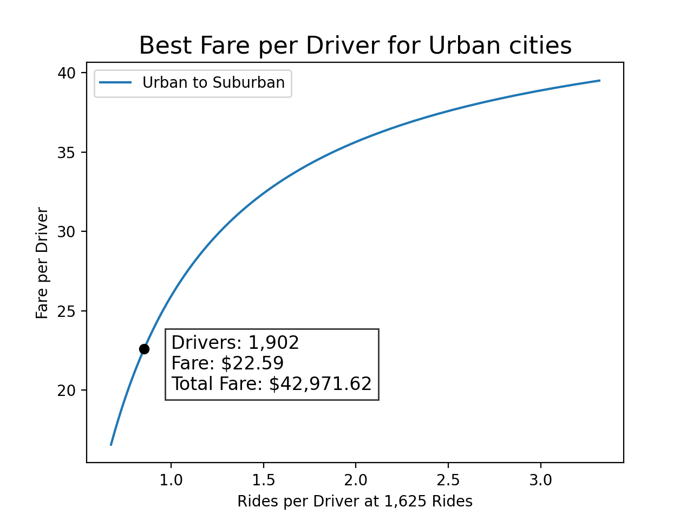

Challenge
Table of Contents
PyBer City Type Analysis
Overview
In this project, we analyzed the fare, drivers and rides data from PyBer, a ride-sharing app company, and we created many charts to help us visualize the results. Thanks to our analysis, we can draw some conclusions that will help the company make decisions on how to improve its service.
Results
Our first impression of the data was that we had a very unbalanced distribution from one city type to another. The amount of drivers in the Urban areas is about thirty times more than in the Rural areas.

Here is a summary of the Total results per City Type.
| City Type | Total Rides | Total Drivers | Total Fares | Average Fare per Ride | Average Fare per Driver |
|---|---|---|---|---|---|
| Rural | 125 | 78 | $4,327.93 | $34.62 | $55.49 |
| Suburban | 625 | 490 | $19,356.33 | $30.97 | $39.50 |
| Urban | 1,625 | 2,405 | $39,854.38 | $24.53 | $16.57 |
There are a lot of Drivers and Rides in the Urban cities, but compared to the other city types, we seem to have a surplus of Drivers. It becomes more obvious when looking at the Average Fare per Driver, which is very small compared to the other city types.
Where to start? Best Fare Price for Urban cities.
The Urban results differ a lot from the Rural ones, so in order to find a better amount of Drivers, we will compare them first to the Suburban results.
In the following code, we will look for the number of drivers in Urban cities that will give us the best Total Fare at the same amount of rides.
import numpy as np import matplotlib.pyplot as plt from pathlib import Path # Creating lines from Urban to Suburban drivers = np.linspace(490, 2405, 100) fare_per_ride = np.linspace(30.97, 24.53, 100) fare_per_driver = np.linspace(39.50, 16.57, 100) # Expecting the amount of Rides to be independent of Drivers rides = 1625 rides_per_driver = rides / drivers # Find the index of the max total fare total_fares = drivers * fare_per_driver m = np.argmax(total_fares) point = rides_per_driver[m], fare_per_driver[m] driver_count = drivers[m] best_fare = total_fares[m] # Plotting file_path = Path("analysis") / "the_best_fare_per_driver.png" plt.plot(rides_per_driver, fare_per_driver, label="Urban to Suburban") plt.plot(point[0], point[1], "ko") plt.text( 1, 20, f"Drivers: {driver_count:,.0f}\nFare: ${point[1]:,.2f}\nTotal Fare: ${best_fare:,.2f}", fontsize=12, bbox = dict(facecolor="white", alpha=0.8), ) plt.title(f"Best Fare per Driver for Urban cities", fontsize=16) plt.ylabel("Fare per Driver") plt.xlabel("Rides per Driver at 1,625 Rides") plt.legend() plt.savefig(file_path, dpi=200) print(file_path, end="")

We found that; assuming a linear relationship in the results of Urban and Suburban cities, the number of drivers that would generate the largest Total Fare for Urban cities is 1,902 drivers. In theory, this follows a supply and demand model, giving us a total of $42,971.62 Total Fare with that amount of drivers.
Because we are concerned about the effects of reducing the number of drivers, we charted the Rides per Driver on the x-axis. We can see that the load is not dramatically increased at the Best Fare, which means that the result is favorable.
From Urban to Rural or to other cities?
Now that we know how many drivers we can move out of the Urban cities, we should find which cities have the most drivers and which ones have the most rides. We can better appreciate the distribution of drivers with a Box and Whiskers chart.

Maybe we can start thinking about separating cities by the number of rides because the difference in rides in Urban cities is three times the difference in Rural and almost two times the difference in Suburban cities. This would help us find the surplus of drivers in specific groups of cities rather than broad categories.
When is best to move the Drivers?
Finally, we can generate a time series chart to visualize the Total Fare by city type to try to find at which point in time is best to move drivers from one city type to another. This will help us minimize a reduction in Total Fare caused by the logistics of changing our current distribution of drivers.
| date | Rural | Suburban | Urban |
|---|---|---|---|
| 2019-01-06 | 187.92 | 721.60 | 1661.68 |
| 2019-01-13 | 67.65 | 1105.13 | 2050.43 |
| 2019-01-20 | 306.00 | 1218.20 | 1939.02 |
| 2019-01-27 | 179.69 | 1203.28 | 2129.51 |
| 2019-02-03 | 333.08 | 1042.79 | 2086.94 |

Summary
We can improve fares and optimize the number of drivers across all cities by making the following changes:
- Improve the distribution of drivers in the Urban cities by moving from cities with low rides and a high number of drivers to cities with high rides and the low number of drivers.
- Move about
500 driversout of the Urban cities into Suburban cities as the distributions are closer. Then move from Suburban cities to Rural areas. Before starting the transition, make sure that the Suburban and Rural areas won’t be heavily affected by the surplus of drivers. If they would, then either move fewer drivers knowing that the Total Fare won’t be optimal; or, as a last resort, consider letting go of a few drivers. - Execute the transition from Urban to Suburban at the start of February and from Suburban to Rural at the start of March as those seem to be the dates with less activity and less Total Fare for each category.
Closing Thoughts
Data transformation and visualization are critical tools to help us make decisions by having a better appreciation of the data. Python makes it easy for us to generate charts programatically, so much so that we can save our favorite chart configurations in a package for later use.
from pyberlib import Pyber my_methods = [m for m in dir(Pyber) if "__" not in m]
['_get_squared_figure', '_get_ultra_wide_figure', '_get_wide_figure', '_plot_bubble', 'bubble_text_args', 'city_types', 'colormap', 'colormap_reversed', 'colors', 'dpi', 'fontsize', 'plot_box_and_whiskers', 'plot_bubble_combined', 'plot_bubble_many', 'plot_pie_chart', 'plot_timeseries', 'savefig']